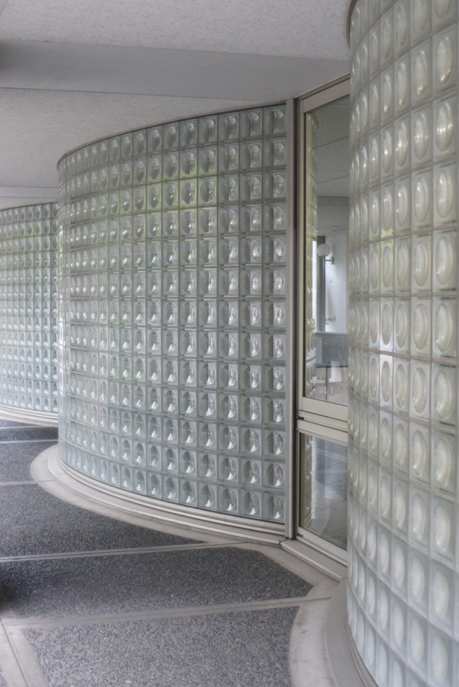
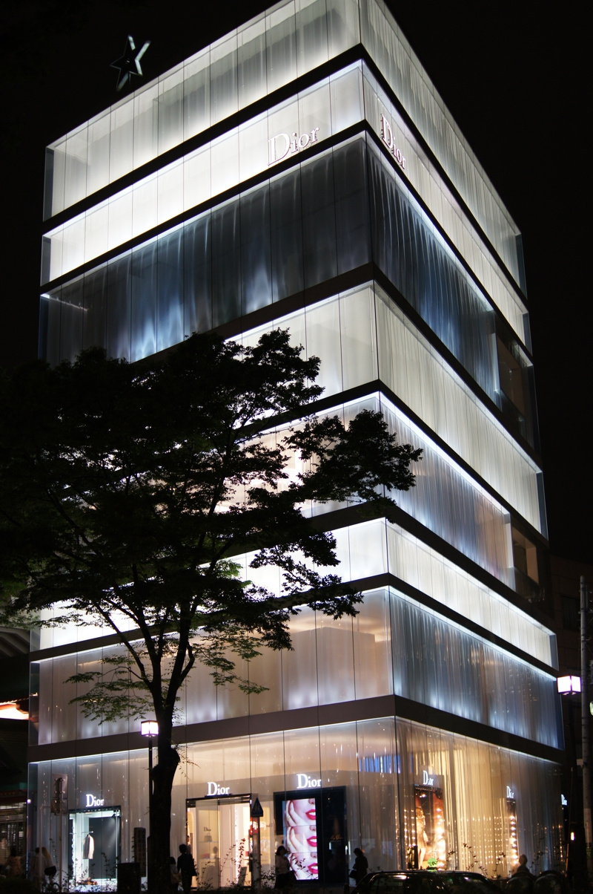

51 Days in Japan
51 Days in Japan
Pages
Day 2: Typical Tokyo Apartment Blocks
Day 3: Bike Locks
Day 4: Glass Bricks
Day 5: Is This What Earthquake Proof Looks Like?
Day 6: Plastic Food
Day 7: Omikuji
Day 8: Umbrellas Are The Future
Day 9: Lights, Camera, Action!
Day 10: Something Completely Different
Day 11: Look Up!
Day 12: The Ut Campus As They Intended It
Day 13: Multi-tasking
Day 14: It’s Raining, It’s Pouring
Day 15: Tokyo Storm Clearing
Day 16: Can’t Catch ’em All!
Day 17: This One Goes Out To The One I Love
Day 18: Feel The Force!
Day 19: Bandit!
Day 20: Shibuya, So Much To Answer For
Day 21: Strange Weather
Day 22: Who’s The Boss Now?
Day 23: To Infinity And Beyond!
Day 24: Late Night Shopping Was Never Like This In Belfast
Day 25: Gotcha!
Day 26: The Secret Of My Success
Day 27: I’ll Bet If I Were A Vulture People Would Have More Respect For Me
Day 28: I Have No Words
Day 29: More Strangeness
Day 30: Ut Festival
Day 31: I Robot
Day 32: 蝕
Day 33: More From Miraikan
Day 34: More Rain, This Time With A Mask
Day 35: Umbrellas… They’re Not Just For Rain
Day 36: More Origami
Day 37: Enough Information Already?!
Day 38: Dear Dad…
Day 39: American Graffiti
Day 40: Doggy Jumpers I Get… But Jeans?!
Day 41: Flashy Or What?
Day 42: A Long Way From Home
Day 43: Beam Me Up, Scotty!
Day 44: Just Like Glasgow
Day 45: Love Actually
Day 46: Consider Yourself Warned
Day 47: I’m Going To Miss The Umbrellas When I’m Gone
Day 48: From Shinjuku By Night
Day 49: Finally, Some Raw Fish, And Wasabi!
Day 50: Much More Raw Fish
Day 51: So Long…
51 Days in Japan
Day 2: Typical Tokyo Apartment Blocks
So, I thought I’d
try
to post a picture every day I’m here, just so you can…
Day 3: Bike Locks
At first it looks like noone locks their bikes. Then you notice they all have…

Day 4: Glass Bricks
They like their glass bricks on the campus buildings, but nowhere more so than…
Day 5: Is This What Earthquake Proof Looks Like?
So another interesting (I hope) geometric picture in shades of grey (there’ll…
Day 6: Plastic Food
I promised something more colourful, so here it is—and I actually took this…
Day 7: Omikuji
This was at the Buddhist shrine on Sunday. It’s the place in the middle of the…
Day 8: Umbrellas Are The Future
I wasn’t expecting this.
It’s been raining a fair bit since I got here, but…
Day 9: Lights, Camera, Action!
Finally the ‘real’ Tokyo, eh? This is Akihabara at night—or early evening…
Day 10: Something Completely Different
I’m posting this one just because I like it, and I promised something more…
Day 11: Look Up!
Back to the big smoke.
This is Shinjuku on Sunday, but not at street level.…
Day 12: The Ut Campus As They Intended It
The University of Tokyo campus is a curious mixture of mundane modern, and…
Day 13: Multi-tasking
I said the umbrellas would be back.
One implication of them all using umbrellas…
Day 14: It’s Raining, It’s Pouring
I was feeling guilty about using photographs not taken on the day, since this…
Day 15: Tokyo Storm Clearing
This is (sort of) the view from my office window, if I crane around a bit. But…
Day 16: Can’t Catch ’em All!
We all know this is why I’m here anyway.
I felt a bit like I was doing…
Day 17: This One Goes Out To The One I Love
Picture of Muji requested by Gill (I have others) so here’s one. As always…
Day 18: Feel The Force!
Here’s one for the boys. I had this set of instructions for an origami yoda…
Day 19: Bandit!
On my walk from Shibuya to Shinjuku on Saturday, in addition to probably…
Day 20: Shibuya, So Much To Answer For
This is Shibuya, that crazy crossing with all the people. It was only about…
Day 21: Strange Weather
That’s not a picture caption but a diary entry. I very nearly ended up…
Day 22: Who’s The Boss Now?
I said that I went wandering in the imperial palace park at the centre of the…
Day 23: To Infinity And Beyond!
Interesting day today. Went to Roppongi, which is another of those districts…
Day 24: Late Night Shopping Was Never Like This In Belfast
This is Shibuya at about 9:45pm on Sunday night, on my way back from my meal…
Day 25: Gotcha!
I mentioned the crows on about the second day I was here—great big black…
Day 26: The Secret Of My Success
I just realised that you have seen no pictures of the transport system…
The…
Day 27: I’ll Bet If I Were A Vulture People Would Have More Respect For Me
On the subject of crows…
In case you don’t get the reference.
Day 28: I Have No Words
This why I love Tokyo. Where else would you see this?
I really have very…
Day 29: More Strangeness
Don’t get me wrong, unlike yesterday’s hyper-weirdness, which I don’t get on…
Day 30: Ut Festival
Interesting day today. Day 1 of the U Tokyo festival, which is a Freshers’…
Day 31: I Robot
This is Asimo, the Honda-designed and built robot (and all we got was this…
Day 32: 蝕
An unexpected bonus this morning: a total eclipse of the sun! I was heading to…
Day 33: More From Miraikan
So before the eclipse so rudely interrupted, I had been going to post this…
Day 34: More Rain, This Time With A Mask
As it has been raining again, and after a good run, I seem to have run out of…
Day 35: Umbrellas… They’re Not Just For Rain
No… it’s not raining again, or at least it wasn’t this morning. In fact it was…
Day 36: More Origami
It took me a little while to figure it out, but here’s my rendition of an…
Day 37: Enough Information Already?!
I suppose this proves what a geek I am, but these signs impress me tremendously.
…
Day 38: Dear Dad…
Not sure if this is irony, completely straight, or some elusive combination of…
Day 39: American Graffiti
Another one of those graffiti artists from the ‘Exit Through the Gift Shop’…
Day 40: Doggy Jumpers I Get… But Jeans?!
Again, from Omotesando. Somehow I’d like to imagine that dressing dogs up like…

Day 41: Flashy Or What?
Yet more Omotesando. This is the Dior shop halfway along Omotesando on the…
Day 42: A Long Way From Home
During my walk on Sunday, I crossed Aoyama Cemetery between Omotesando and…
Day 43: Beam Me Up, Scotty!
This is the Campus Refectory, where I’ve been getting lunch quite a bit. It’s…
Day 44: Just Like Glasgow
I have pictures somewhere in the house of views across Glasgow’s Necropolis…
Day 45: Love Actually
Much as I dislike that movie, it makes a good headline. This is Tokyo’s copy…
Day 46: Consider Yourself Warned
This just in from the blase about museums desk…
You could post a picture every…
Day 47: I’m Going To Miss The Umbrellas When I’m Gone
In which are brought together two of the great themes of this diary, umbrellas…
Day 48: From Shinjuku By Night
I’m glad give the recent rain that I decided to go and get my Tokyo by night…
Day 49: Finally, Some Raw Fish, And Wasabi!
Not the first time, but the first time I remembered my tourist duty and took a…
Day 50: Much More Raw Fish
Much
more raw fish in every sense. I actually shouldn’t have been here as it…
Day 51: So Long…
… and thanks for all the fish. Some live ones to leave with. I have quite a…
No matching items